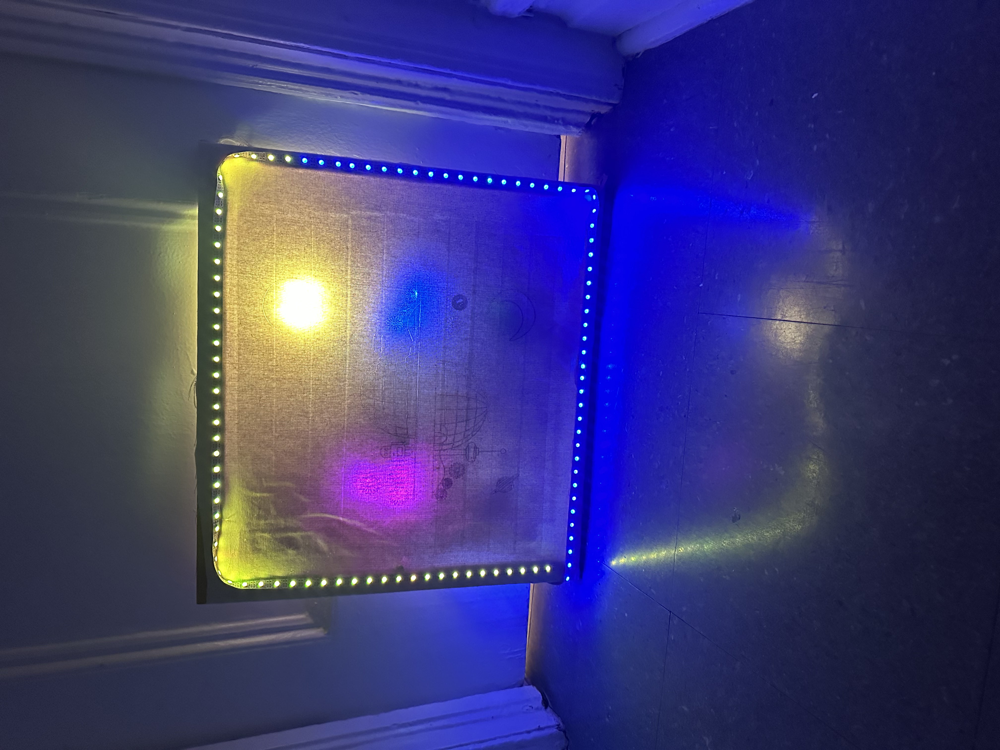
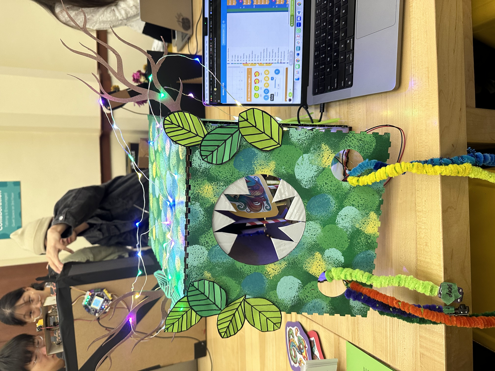
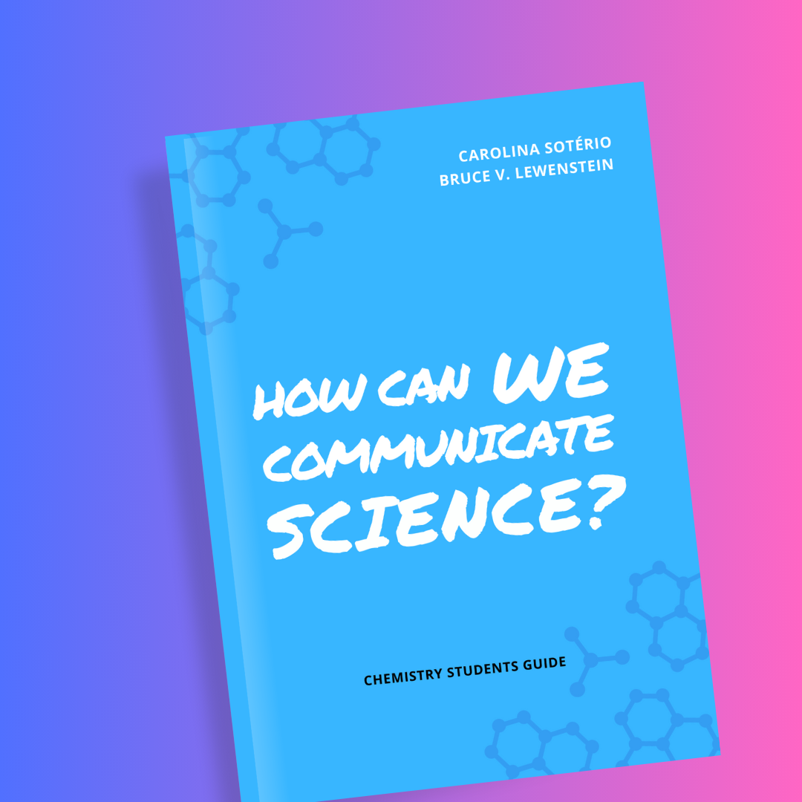

Instructional Design

Lab-on-a-Book
A hands-on paper chemistry kit for under-resourced schools.

Retro Futuristic Living Canvas
An immersive design of art and technology project integrating fabric, laser cutter, arduino, and LED.

Storytelling MonsterBox
Bridging storytelling, mechatronics, and design for immersive learning experiences.

SciComm Collaborative Guidebook
A guide developed with UI/UX strategies and international stakeholder feedback.
Web Design

Prep&Plate
A website that suggests personalized recipes based on the user's ingredient list, dietary restrictions, and meal preferences.

Gamified Birthday Card
A video-sensing birthday card for personalized, out-of-the-box wishes.

My Pet Plant
This app transforms plant care into an interactive and social experience.
Photography
Interviews & Magazine Articles

Prof. Dr. Bruce Lewenstein
A conversation on the critical role of public discussion in driving scientific progress.

Prof. Dr. Sonia Guimarães
A dialogue on the challenges and opportunities in Science & Technology in Brazil for early career individuals, through the lens of marginalized communities.

ComCiencia Magazine
A series of articles on science, technology, and its social effects.
Podcasts

Chemistry Minute
Your daily pill of everyday science.

Quarantine
Exploring stories on science and humans during the Covid-19 pandemic.